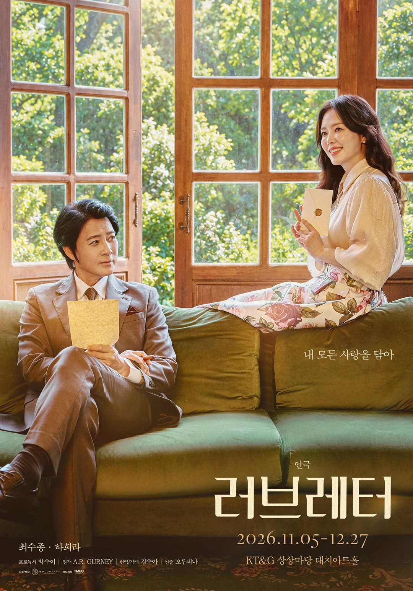
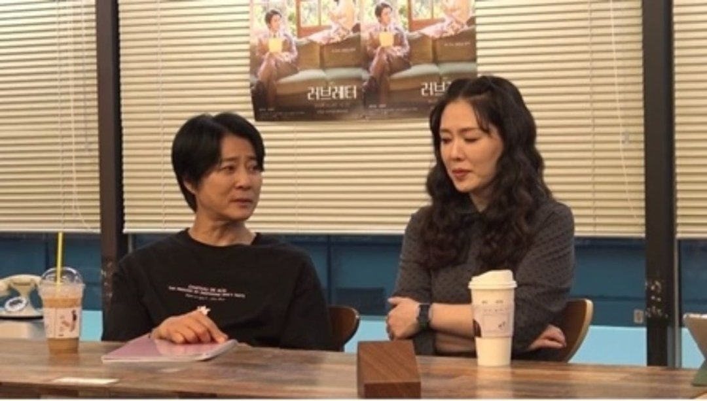
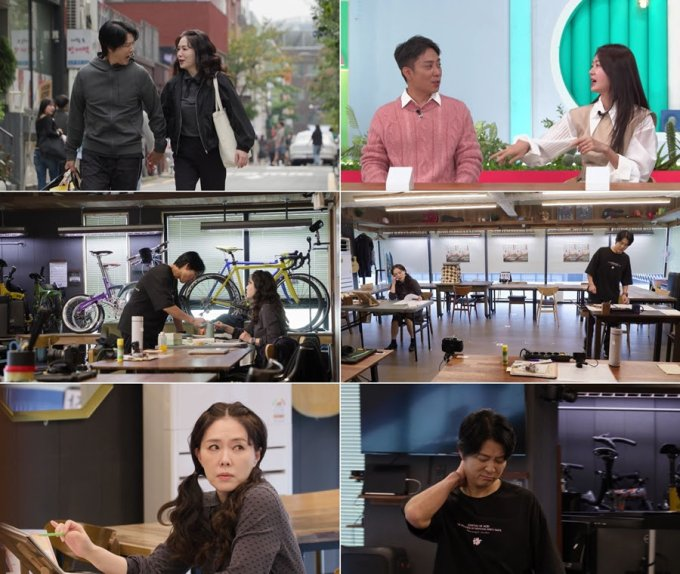
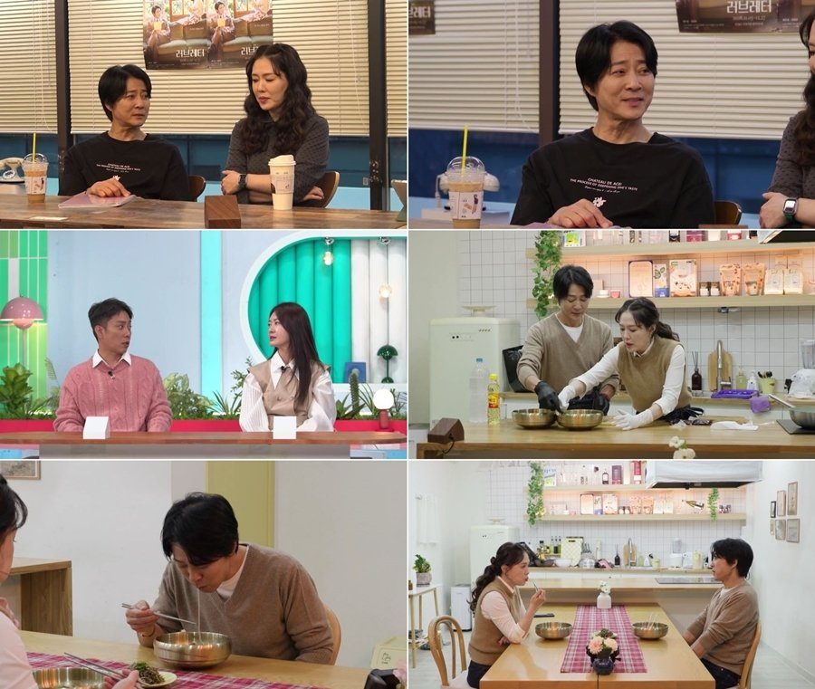
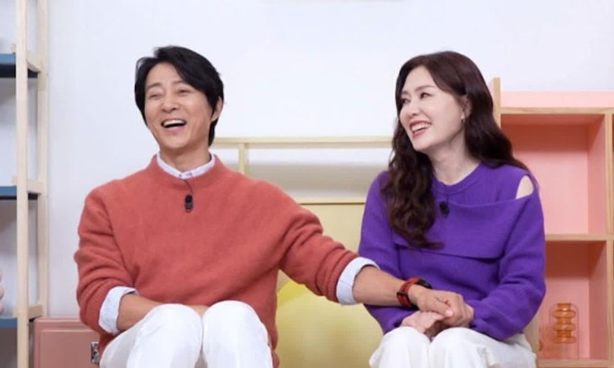
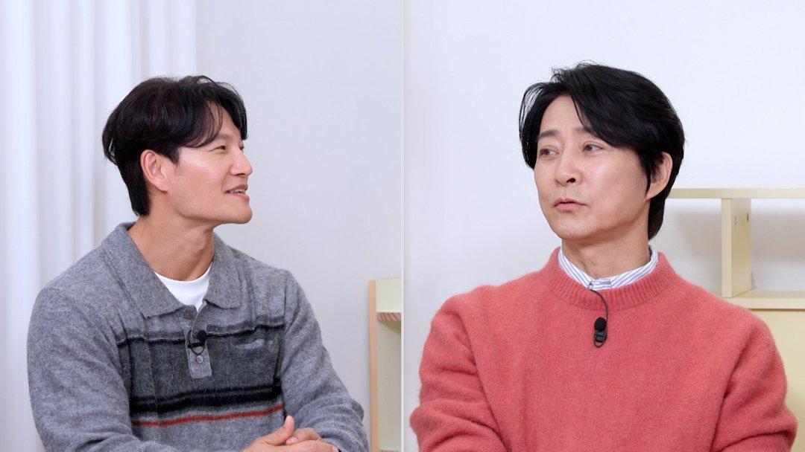

최수종과 하희라가 같은 무대에 서는 연극은 처음이에요. 이번 주 두 사람이 예능에 연달아 나온 시기도 이 연극 '러브레터'의 개막과 겹쳐요. 언제, 어디서 하는지와 7일 '살림남'에서 공개된 연습실 이야기를 정리했어요.
📷 사진 1 자리
▲ 최수종·하희라 주연 연극 '러브레터' 공식 포스터 · 사진=수컴퍼니 제공
11월 5일부터 12월 27일까지, 대치아트홀
공식 포스터에 적힌 공연 기간은 2026년 11월 5일부터 12월 27일까지예요. 장소는 KT&G 상상마당 대치아트홀이고, 원작자로 A.R. 거니(A.R. Gurney)의 이름이 올라 있어요. 포스터 속 두 사람은 각자 편지를 손에 들고 있어요.
두 사람이 함께 무대에 오르는 건 결혼 후 처음이에요. 데뷔 이후로 따져도 첫 동반 연극이에요.
📷 사진 2 자리
▲ KBS2 '살림하는 남자들 시즌2' 속 연극 연습실의 최수종과 하희라 · 사진=KBS2 제공
연습실에 가장 먼저 오는 부부
KBS2 '살림하는 남자들 시즌2'는 두 사람의 연습 장면을 보여 줬어요. 공식 클립 제목대로라면 4년 만의 '살림남' 출연이에요. 방송 속 두 사람은 연습실에 가장 먼저 도착해 같이 밥을 먹고 대사를 맞췄어요.
▶ 영상 1 자리
연습 중에 집안에 슬픈 일도 있었어요. 최수종의 어머니가 세상을 떠난 소식을 연극 연습 기간에 들었다는 거예요. 하희라는 연습 때문에 남편이 슬픔을 내보이지 못한다며, 남편이 가장 힘들 거라고 말했어요.
📷 사진 3 자리
▲ '살림하는 남자들 시즌2'에 담긴 두 사람의 연습 일상 · 사진=KBS2 ‘살림하는 남자들 시즌2’ 제공
그래서 하희라가 고른 건 냉면이었어요. 시집와서 시어머니에게 처음 배운 요리가 냉면이었고, 최수종에게는 이북 출신 아버지와 함께 먹던 음식이었어요. 하희라는 이 냉면이 남편에게 위로가 되길 바란다고 했어요.
📷 사진 4 자리
▲ '살림하는 남자들 시즌2' 연습실과 냉면 장면 · 사진=KBS 제공
옥문아에서 살림남까지, 한 주의 흐름
날짜로 놓으면 순서가 보여요. 주 초에는 최수종이 KBS2 '옥탑방의 문제아들'에 나와 하희라 이야기를 했고, 5일에 연극이 막을 올렸어요. 7일에는 '살림남'에서 연습실 일상이 공개됐어요.
📷 사진 5 자리
▲ KBS2 '옥탑방의 문제아들'에 나온 최수종(왼쪽) · 사진=KBS 2TV ‘옥탑방의 문제아들’ 제공
연극 제목과 겹치는 이야기도 있어요. 최수종은 연애 때부터 아내에게 편지를 많이 써서 모아 뒀고, 지금도 쓴다고 밝혔어요. '옥탑방의 문제아들'에서도 서랍 속 결혼 2주년·10주년 편지 이야기가 나왔어요. 7일 방송에는 하희라가 준비한 깜짝 이벤트도 나왔는데, 그 장면은 KBS 공식 클립으로 볼 수 있어요.
📷 사진 6 자리
▲ '옥탑방의 문제아들'에서 이야기하는 최수종(오른쪽) · 사진=KBS 제공
▶ 영상 2 자리
기사만 보면 모친상과 냉면이 가장 크게 남지만, 날짜를 이어 보니 이번 주 출연은 연극 개막과 정확히 겹쳐 있었어요. 연애 때부터 편지를 써 왔다는 부부의 첫 동반 연극 제목이 하필 '러브레터'라는 점도 눈에 띄어요. 방송으로 두 사람을 다시 보게 됐다면 공연 기간이 12월 27일까지라는 것부터 챙겨 두면 좋겠어요.
연극 '러브레터'는 12월 27일까지 KT&G 상상마당 대치아트홀에서 공연해요. '살림하는 남자들 시즌2'는 토요일 밤 KBS2에서 방송해요.





